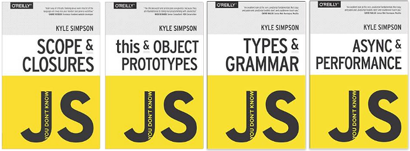
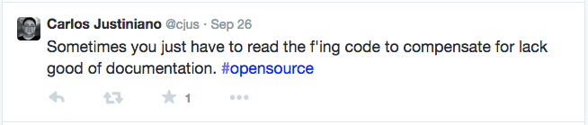
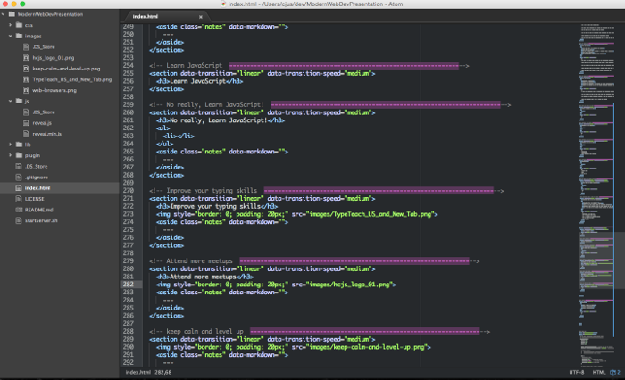
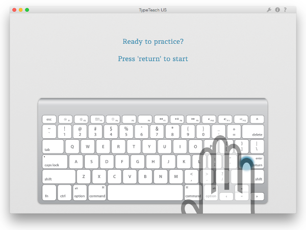

Modern Web Development
Presented by Carlos Justiniano / @cjus / ver: 0.1.0
About this presentation
- This is a 30,000 foot view
- We may not cover your favorite tool
- Our goal is to convey topic breath and not depth
Latest presentation at: http://github.com/cjus/modern-web-development-presentation
Issues with this presentation? Fix it and issue a pull request
Less modern dev
- Site built using a text editor and web browser
- Some amount of jQuery
- No use of a library such as Backbone or a framework such as AngularJS
- Poor testing practices
- Raw files deployed to webserver without packaging
More modern dev
- Seperation of concerns
- Model, View, Controllers
- Libraries and frameworks to add structure and improve maintainability
- Tools, called linters, that help spot issues and support maintaining best practices
Modern web editors and IDEs
Preparing files for the web
Transpilers
This ain't your daddy's JavaScript
JavaScript, front to back and sideways
- No longer only in the front-end
- JavaScript run in the back-end on NodeJS
- Also used to build database queries in CouchDB and CouchBase
- JavaScript Object Notation is also used with databases such as Couch, Mongo and Redis
- JS is also being used in Robotics, checkout Cylon.js and NodeBots
No really, Learn JavaScript!
- Still surpised by the "this" keyword?
- Don't use prototype?
- Don't understand type coercion?
- Are you mostly using arrays and not using objects as data structures?
- Don't understand hoisting?
- Don't understand block vs function scoping?
- Are you confused by clousures?
Then you don't really know JavaScript

- Checkout Kyle Simpson's book series
Bonus: Checkout Kyle's presentation deck for the 2013 HTML5 Developer Conference at
http://html5devconf.com/archives/oct2013/speakers/kyle_simpson.html
- View the source for annotated Backbone.js, underscore.js
- http://backbonejs.org/docs/backbone.html
- http://underscorejs.org/docs/underscore.html
- Open up the jQuery source file and see if you can follow what's going on
Because remember...

Learn to use your editor

Improve your typing skills

Contact
- cjus on Twitter and Github
- Email: cjus34@gmail.com
- About: http://cjus.me